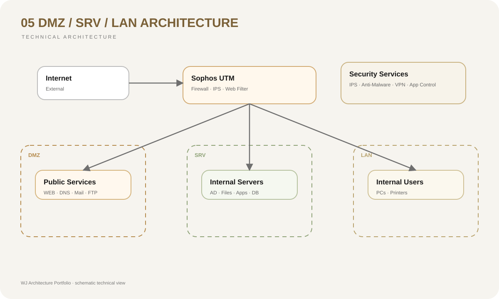

Exposición de la LAN
La DMZ evita que servicios públicos residan directamente dentro de la red interna.
05 / Perimeter Security
Arquitectura segmentada para aislar servicios públicos, servidores internos y usuarios corporativos.
07 / Risk Reduction
La DMZ evita que servicios públicos residan directamente dentro de la red interna.
Los flujos entre DMZ, servidores y LAN se controlan mediante reglas específicas.
La separación de zonas reduce el alcance potencial de un servicio comprometido.
Solo se exponen los servicios estrictamente necesarios.
01 / Context
Publicar servidores directamente desde la LAN aumenta el riesgo de que una vulnerabilidad en un servicio accesible desde Internet permita alcanzar activos internos. Los servicios públicos requieren una zona intermedia con controles propios.
02 / Objective
Separar servicios expuestos, infraestructura interna y usuarios en zonas de confianza diferentes, controlando explícitamente los flujos permitidos entre Internet, DMZ, servidores y LAN.
03 / Architecture
La DMZ concentra los servicios que deben recibir conexiones externas. Un reverse proxy y controles de aplicación pueden actuar delante de los servidores web, mientras los sistemas internos permanecen en segmentos independientes y sin acceso entrante directo desde Internet.
04 / Diagram

05 / Decisions
Los servicios públicos no comparten directamente la misma zona de confianza que los usuarios internos.
Las solicitudes externas pueden terminar en un punto controlado antes de alcanzar los servidores de aplicación.
Las aplicaciones web pueden incorporar inspección específica frente a ataques dirigidos a la capa HTTP.
Solo se habilitan conexiones necesarias entre DMZ, servicios internos y bases de datos.
06 / Stack
08 / Result
La segmentación disminuye la exposición de la LAN y establece límites claros entre servicios públicos e infraestructura privada. Una eventual vulnerabilidad en la DMZ no implica automáticamente acceso a toda la red corporativa.
08 / Lessons
La DMZ es efectiva cuando existen políticas restrictivas en ambos sentidos. Colocar un servidor en una subred llamada DMZ sin controlar sus flujos hacia la LAN no constituye por sí solo una arquitectura segura.